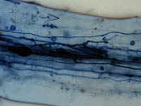

|
|
|
| There is no doubt that the effect the microflora have on the soil system far outweighs their size. This group includes the thousands of species of microorganisms including fungi, bacteria, actinomycetes and algae. | |
 Fungi
Most of us are familiar with the mushrooms
we can buy in a grocery store. They are the flowering parts of
an edible fungus. Like all other fungi, the mushroom is attached
to a network of white or colourless threads that might be compared
to a mass of white shoelaces. In 28g (1 oz) of fertile soil, there may
be as many as 2.3 km of these thread-like mycelia. Generally, fungi are found near the surface of the soil where there is more oxygen and a good supply of organic material. There are fungi which can be found deeper in the soil; as deep as one metre. Fungi living here are adapted to lower oxygen levels. Most fungi are "water loving" and thrive best in moist environments. Too much water, however, reduces the amount of oxygen the organism needs to survive.
Not a plant, this extremely important group of organisms in the soil environment do not possess any chlorophyll (necessary for photosynthesis). The majority of fungi are saprophytic meaning that they obtain food energy by consuming dead plant matter. The fungi secrete digestive enzymes into dead plant matter and then absorb the nutrients. Fungi are capable of decomposing (breaking-down) large plant molecules found in dead leaves and wood, molecules which cannot be broken down by many of the other soil decomposers like bacteria. Fungi then, play an essential role in the recycling of nutrients from dead plant matter.
Think about it!: What would happen if there were no fungi in the soil or if the soil was flooded in the springtime....? Without fungi, we would be smothered by 10 000 years of fallen trees, branches and other dead plants. As stated, fungi are the primary decomposers of most plant tissues in the soil. In agricultural soil, fungi play a vital role in the cycling of organic matter. Some fungi are carnivorous, consuming animal matter, and, they have fascinating eating habits. One type of fungus trap consists of a network of highly adhesive hoops which entangle roundworms. A fine filament of the fungus penetrates and fills the body of the worm, absorbs its contents, and leaves only the skin. Another fungus trap operates like an animal snare. The fungus has thread-like rings. When a roundworm passes through the ring, the friction of its body stimulates the ring cells to swell and grip the worm. The ring expansion is exceptionally rapid, one-tenth of a second, and the worm has little chance to escape. Specialized fungi (see image) called mycorrhizae (fungus root) invade plant root cells and create a symbiotic relationship. In exchange for about 5-10% of the sugar compounds created by photosynthesis by the plant, the fungus greatly enhances the plants ability to pick up nutrients. Small hyphae are sent out into small pores up to 15cm away from the root. In many cases the fungal hyphae will extend the roots absorptive system by 10 fold or more. The uptake of the more immobile plant nutrients, particularly phosphorus, is greatly improved. In some situations the plant would not survive without the mycorrhizal infection. Other benefits of mycorrhizae to plants are:
| |
Actinomycetes Most of you are familiar with the ffresh earth smell after a rainfall. This is often the result of actinomycete activity. Actinomycetes resemble molds and have thin filaments with many branches. Their filaments are smaller than those of fungi and they are spore forming. Although in the past they have been classified with fungi, they are now commonly grouped with bacteria since they have no nuclear membrane. Actinomycetes are generally aerobic heterotrophs meaning they need an organic carbon source and air to survive. Many actinomycetes produce powerful antibiotics that kill bacteria and other microorganisms. Many of are modern wonder drugs were discovered from soil actinomycetes e.g streptomycin, actinomyacin, neomycin. Actinomycetes grow best in neutral soils at a pH of 6-7 and do not like soils with an acidic reaction. The scabs on potatoes are formed by actinomycetes. How do you think farmers can control this problem? Actinomycetes are very abundant in soils. A single gram can contain hundreds of millions usually about one tenth of the soil bacteria. Actinomycetes are important in helping to breakdown some of the more resistant compounds in plant material such as cellulose and chitin. | |

Bacteria Soil bacteria outnumber all other soil organisms by far. In a healthy, soil their numbers could exceed 109 or one thousand billion per gram of soil with over 20,000 species present. Bacteria are one of the simplest forms of life - a single cell with a diameter or length of only a micrometre or so. Bacteria are classified as heterotrophic or use organic carbon as an energy source or autotrophic gain energy from the oxidation of inorganic chemicals. Bacteria take part in almost all soil decomposition reactions and are crucial to the breakdown of soil organic matter and crop residues. Specialized groups of bacteria are extremely important in soil since they promote vital biochemical reactions. The oxidation of ammonia to the mobile nitrate anion or nitrification is brought about by bacteria. So is sulfur oxidation to the plant available sulphate anion. The image shows the close association between bacteria and plant roots These rhizobacteria flourish in the rich environment around roots where exudates and sloughed off cells contain a wealth of nutrients. Cyanobacteria (previously called blue-green algae) are a special group that contain chlorophyll and can photosynthesize like plants. This group of organisms is important in rice paddy soils and wetlands because they can also fix nitrogen. | |
Algae Small microscopic plants called algae exist in soil. Like higher plants they have photosynthetic abilities and grow best at or near the soil surface. They can add a significant amount of organic matter to soils since population can be several hundred thousand per gram.
| |
|
|